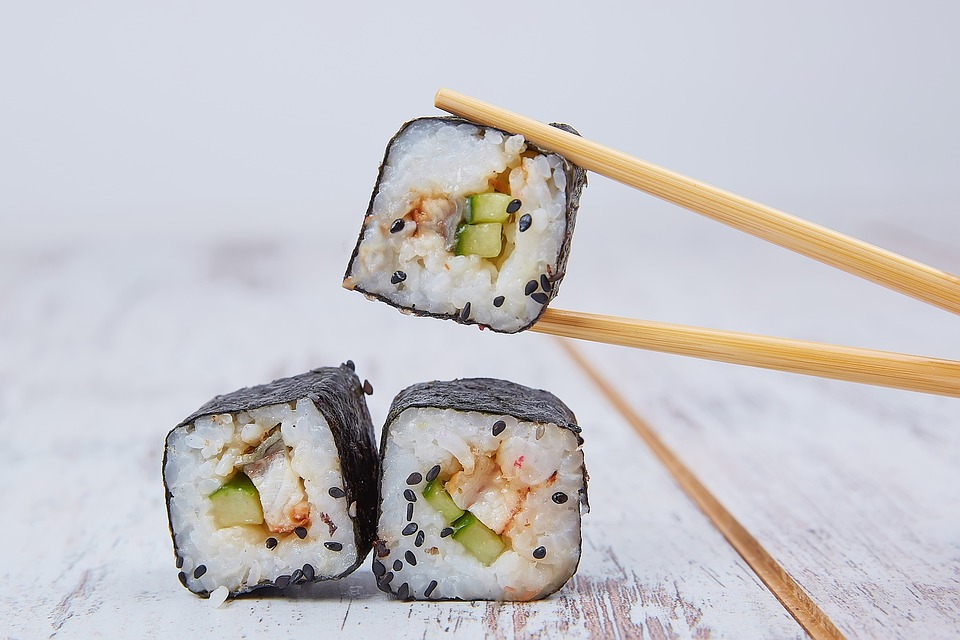
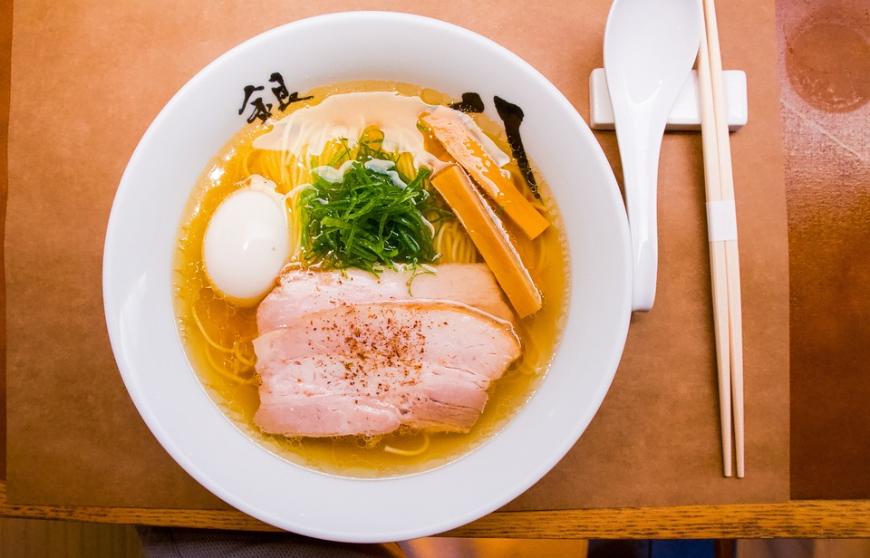
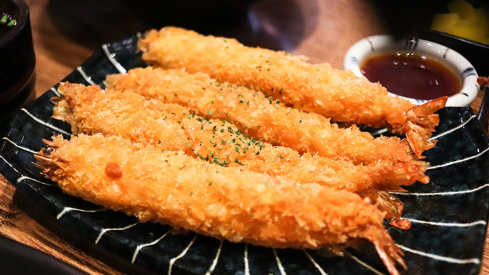

Japanese Food
Here are some delicious dishes from Japan:

Sushi is a popular Japanese dish made with vinegared rice and various ingredients, such as raw fish and vegetables.
picture by Adamsov Pixabay License

Ramen is a Japanese noodle soup dish that originated in China and has become a popular staple in Japanese cuisine.
picture by 5amramen Pixabay License

Tempura is a Japanese dish made by deep-frying various ingredients, such as seafood and vegetables, in a light batter.
picture by allybally4b Pixabay License